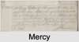

| [Index] |
| George OSBORNE |
|  |
| m. 29 Apr 1717 Mercy CURLING (1694 - 1765) at St Mary Bredman, Canterbury |
| Children (3): |
| Emlim. Emblem OSBORNE (1715 - 1778) |
| Mercy OSBORNE (1720 - ) |
| Elizabeth OSBORNE (1721 - ) |
| Events in George OSBORNE's life | |||||
| Date | Age | Event | Place | Notes | Src |
| 1715 | Birth of daughter Emlim. Emblem OSBORNE | Lydden | Note 1 | ||
| 29 Apr 1717 | Married Mercy CURLING (aged 23) | St Mary Bredman, Canterbury | Note 2 | ||
| 1720 | Birth of daughter Mercy OSBORNE | Lydden | Note 3 | ||
| 1721 | Birth of daughter Elizabeth OSBORNE | Lydden | Note 4 | ||
| 1765 | Death of wife Mercy CURLING (aged 71) | Ramsgate | Note 5 | ||
| 27 Feb 1778 | Death of daughter Emlim. Emblem OSBORNE (aged 63) | St Laurence | Note 6 | ||
| Created on a Mac™ using iFamily for Mac™ on 8 Oct 2023 |